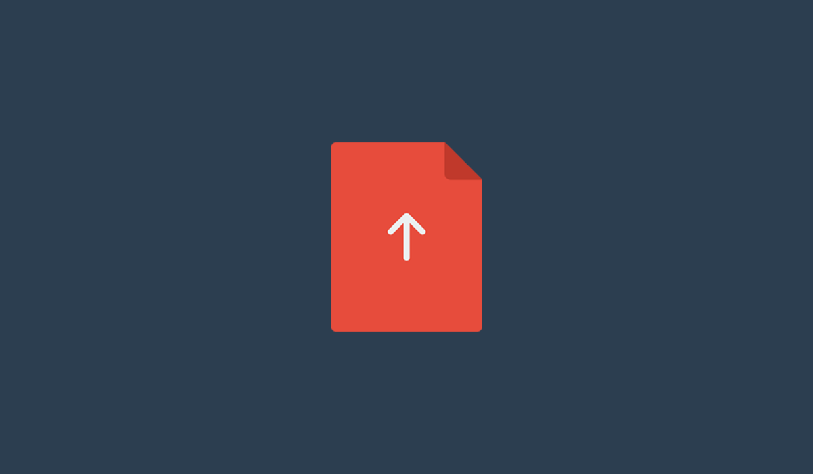
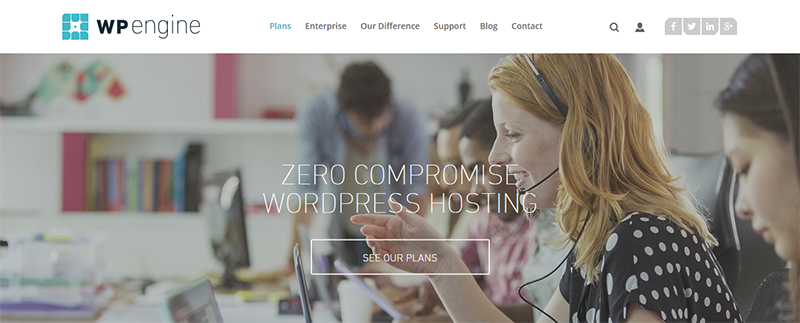
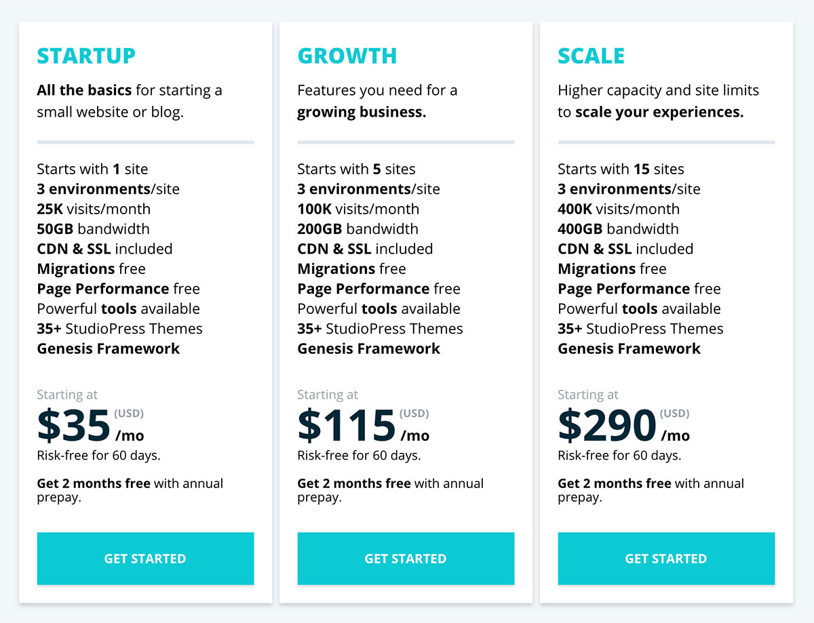
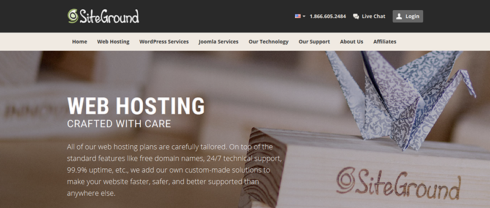

A search box is one of the prime components of a website that define and…
How To Choose The Right Hosting For Your WordPress Website? – A Beginner’s Guide
2. How To Choose The Right Hosting For Your WordPress Website? – A Beginner’s Guide
If you are looking for web host for your new WordPress site, then you have numerous options in front of you. There are hundreds, if not thousands of great providers of web hosting services. This post is aimed at anyone who’s creating a new WordPress site or those who’ve created a new WordPress site and aren’t satisfied with their web host.
With so many options, the question then becomes, “how do you pick the one that’s best for you and your website?”.
There are a number of parameters that play a role, in the suitability of a web hosting service.
In case, you were wondering we use Kinsta. Now the plans that we’re on currently set us back $1,800 a month, depending on data transferred.
With web hosting, one size certainly does not fit all. The ideal web host for Colorlib is probably not the best one for you. If you’re starting a website under a new domain name, you’ll find the costs expensive and the hardware unnecessarily powerful .
Every scenario is different, a few pointers to help you find the right host. First, we need to address your requirements.
What Does Your Website Need?
A few questions that arise,
- What is your current website traffic? How much do you expect it grow in the next few months?
- How scalable a web hosting provider do you want? This would depend on your answer to the previous question.
- Do you require your hosting service to be developer friendly?
- How much support do you need?
- What is your allocated budget for your hosting solution?
These should be foremost among the questions that you need to answer, before you try to identify the right hosting solution for your WordPress site.
What Features To Look Out For In Your Web Host?
1. Speed & Performance
Good hardware is essential to ensure great quality of service from a web host. The memory (RAM), the processing power (CPUs) and disk space (HDDs & SSDs) made available to you play a big role in determining the overall performance of your website.
Now the usage of your RAM and CPU, depends on the type of content on your website and the number of visitors at any one type. For example, if you create viral content the average hosting plan provided to you at minimal cost is not sufficient to handle such bursts of traffic. It will cause your website to slow down and on the rare occasion even go offline. And we can’t have that.
It isn’t disk space that is important, seeing as though there are many hosting companies who provide you with unlimited disk space. Rather the ability of your host to get the information quickly to your visitors, in other words the transfer speed that counts. And it is even better, if you have a web host who can keep your site’s data transfer times low, even under high load.
You can check the load on your server’s CPU, RAM and how much disk space you use. If you are cutting it close, then it is time to upgrade your hosting plan. You can generally check this from your host’s dashboard.
Generally, the costlier hosting plans can handle larger traffic more effectively.
2. Support
This depends largely on your familiarity with different hosting solutions. You’ll need less support, if you know your way around WordPress installation, migration, security, caching, site backups and restorations .
But even if you know everything, there is always the potential for that one glitch to mess everything up and it is advisable to have a web host who cares about ensuring that their product functions as advertised. And most providers of web hosting services ensure some degree of support. They provide support via telephone, support forums, live web chats, emails and a support ticket system.
Ideally the best support service is the one that is provided at a moment’s notice and with the quickest turnaround times.
3. UpTime

Most web hosting services have uptimes in excess of 99.5%. There a very few in the sub 99% region. While it doesn’t seem much, if 0.1% has a significant impact on your income from your website it becomes rather important. Otherwise, it is not something you need to concern yourself with. I say this because most web hosting companies of repute have excellent uptimes.
4. What Else Do You Expect Of Your Web Host?
- Offsite BackUp & Recovery – If ever your website gets hacked or loses all its data for some reason, you need to be able to restore your website to its former glory.
- Caching – Some web hosting companies provide caching to help ensure increased speeds. In house caching includes caching on the server side and the client’s end. There are few plugins to help with client side caching, head over to my previous post on the WordPress caching plugins.
- Git version Control – This interests developers.
- Built-In CDNs – Either that or you can opt for, in all likelihood the best CDN service in MaxCDN.
- Security Features – You can check out how many times they’ve been hacked, a good indicator of their security.
- Physical location of data center – The closer it is to the majority of your website’s visitors, the better.
The above six are reasonably important criteria, that you’ll need to consider carefully before coming to your decision.
What Are The Different Types Of Hosting? Which One Is Suited To Serve Your Site?
There exist 4 different types of hosting services that anyone who runs a WordPress site or is going to start a new WP site has to be aware of before arriving at the right choice.
- Shared Hosting
- Virtual Private Server Hosting
- Dedicated Hosting
- Managed Hosting
Some hosting methods are better than others but they are also equally pricier.
Apart from the previously mentioned four hosting types, there is free WordPress hosting. But normally with such a service, there is a catch. For example, they’ll ask you to include adverts on your website. Free hosting services aren’t remotely as reliable as a paid hosting plan. If you are serious about creating a good website and generating revenue from your site, you shouldn’t consider free hosting plans.
Shared Hosting
The cheapest form of hosting, least configurable and most inflexible among the four hosting types. This works on the premise that a website with less traffic doesn’t consume as much of the server’s resources. Knowing that, your website is coupled with another ten or hundred websites and they are all provided for by a single server with shared processing power, memory and disk space.
Now this is acceptable for small websites with less traffic. But should the server your site loads from ever get overloaded then all the websites on it, including yours will slow down. In other words, you get a good host most of the time but if your site or other sites on the same server start getting too much traffic, the server will either slow down or crash. Generally, your host provider will ask you to upgrade your hosting plan, when your site is the reason that its shared server resources are at its limit.
Do not get fooled by unlimited disk space advertised by shared hosting services, this isn’t at all relevant. What you really need is enough RAM and CPU to enable your server to transfer your site’s data to its visitors quickly and with minimal response time. This will not happen, if your server is overloaded with requests from more visitors than it can handle.
Given that this is the cheapest, it is also a good place for beginners with little or no blogging experience to start. This is the best option for low traffic websites which aren’t optimized for monetization. Not an advisable choice, if you are creating a website intended for high traffic and commercial purposes.
VPS Hosting
With a virtual private server, you aren’t given the complete resources of any one server. Instead, the said server is partitioned with your needs in mind. You are given a certain amount of disk space, memory and processing power. You are given root access and you can modify the performance related components of the server to suit your needs. This requires quite a bit of technical expertise and isn’t recommended for a newbie.
VPS plans and hardware are extremely flexible and scalable. With most hosting plans for VPS hosting, you pay for the resources that your website utilizes.
Your website will never slow down or become unresponsive due to server overload, so long as you ensure that it has adequate server resources available to it.
An intermediate level blogger or developer looking to create a website made to measure for a specific purpose is the ideal option.
Dedicated Hosting
A website’s only served by a leased out server. The server’s full memory, processing power and disk space are at your disposal. Your website will almost never slow down.
Here’s the catch, they are generally very expensive. Such hosting is required only if your website receives extremely high traffic, so much so that it needs a server unto itself to function effectively.
You do not need a dedicated server, only high traffic sites need dedicated servers.
Managed WordPress Hosting
Probably the best option for non tech savvy people, the technical side is completely taken care of by your hosting company. You can focus on making your website popular and creating awesome content.
Even tech savvy VPS users sometimes fail to fully optimize their sites and as a result they aren’t as fast as can be. In this case, you do not have to worry at all. The hosting company regularly caches your website, they run malware scans, fix security loopholes as soon as they’re discovered, update your WordPress plugins/themes, run daily backups and if your site ever goes down they’ll perform a full restoration. They provide excellent support around the clock.
The fact that everything is taken care off, isn’t necessarily the best thing about managed hosting plans. They come with the promise of infinite scalability at reasonable added costs.
Another feature about managed hosting services is almost zero down time. And with the best, you’ll literally have zero down time.
Managed Hosting is the best option, if you do not want to get involved with the technical side of things. It permits you to focus all your attention on improving and adding great content to your website. And when it does become bigger, your website can easily be scaled with the additional resources that your web hosting company will provide.
I’d recommend you start with Managed WordPress Hosting
It is by far the best choice for any eCommerce entrepreneur, a blogger creating a commercial website or any other small business. You can grow without having to worry about your host’s ability to handle increased server loads. Hosting company will take care of regular backups, WordPress core updates and any other technical challenge your website might face along the way.
Best Of Managed WordPress Hosting
WPEngine
WPEngine probably the best managed WordPress hosting service, they are the ones who introduced the concept of managed WordPress hosting and made it possible for WP newbies to run awesome websites.

They offer excellent service and support, perform daily backups, scan for malware, offer single click restoration options, easily enable CDNs for fast content loading, ensure enhanced security with a firewall and SSL enabled on all websites. WPEngine also provides a staging area for you to test things out, something that will come in handy for a WP newbie.
WPEngine uses EverCache which is a proprietary WordPress architecture developed by the engineers at WPEngine. EverCache makes sure scaling your website never becomes an issue and can handle traffic spikes without cracking under the pressure.
You’ll also have the option of choosing between servers in America, London and Tokyo.
Considering the services they offer, the price of $35 per month seems low. This is the best deal on offer for anyone genuinely interested in creating a commercial, revenue generating website with high traffic.
And they always allow for your site’s growth by upgrading your site’s hosting plan. The pricing table as you can see below has a number of choices, each catering to different levels of website traffic.

As you can see, you’ll have no problem with your host when your site grows to epic proportions. The three plans you should consider seriously come with a 60 day refund policy, in case things do not work out or you find it is rather expensive for your liking. A successful viral website results to no extra charges and kept current plan.
30,000 websites in over 120 countries trust WPEngine with their hosting requirements, that is quite a big client roster.
More InfoBest Of Shared Hosting
SiteGround
SiteGround offers free WordPress auto updates, advanced security, in-house caching, free CloudFlare CDN, daily backups, anti hack systems, 24/7 support via phone, chat & tickets, pre-installed Git and a staging area.

Whilst they provide CloudFlare freely, if you want to use MaxCDN or any other CDN service then you’ll need a third party caching plugin like WP Super Cache.
Starting at $3.95/month, it is way cheaper than managed WordPress hosting services. And they offer a 30 day money back guarantee.
More InfoFinal Thoughts
There are other web hosting alternatives for shared and managed hosting, I’ve shared the two I think are the best.
If you want to create a popular commercial revenue generating website, start off with WPEngine or an equally good managed WordPress hosting company. If you find out, that it is taking too long to generate sufficient revenue to excuse spending $29/month on hosting, then switch to SiteGround’s shared hosting plan.
I’ve chosen not to talk about clustered and cloud hosting options because they aren’t really necessary for a WP newbie.
The first time I created a website, it was an exhilarating experience. Please do share your thoughts on WP hosting and your first time with web hosting 😉
Looking for the best WordPress theme?
 Get it now!
Get it now!![]()